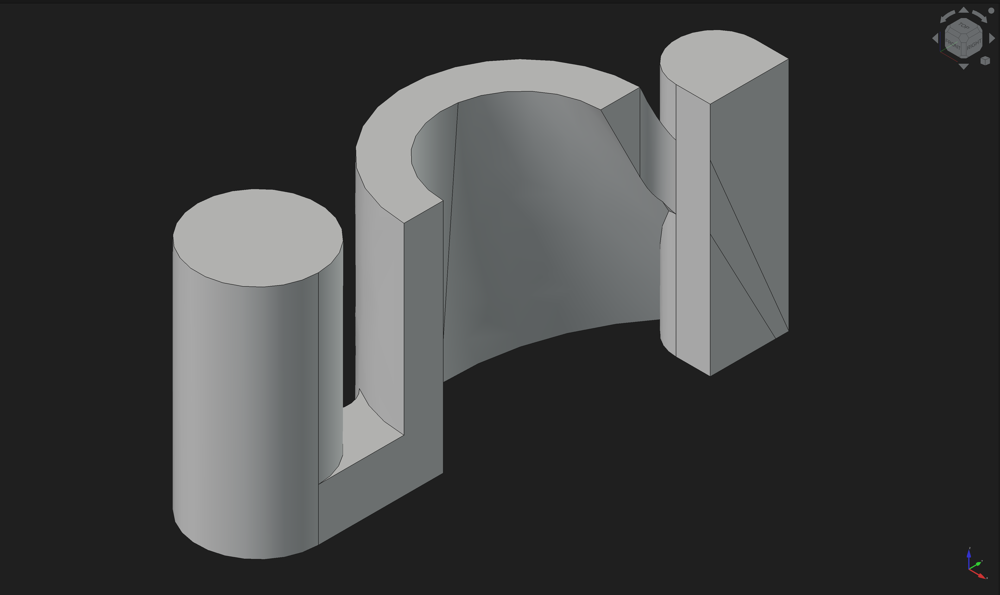
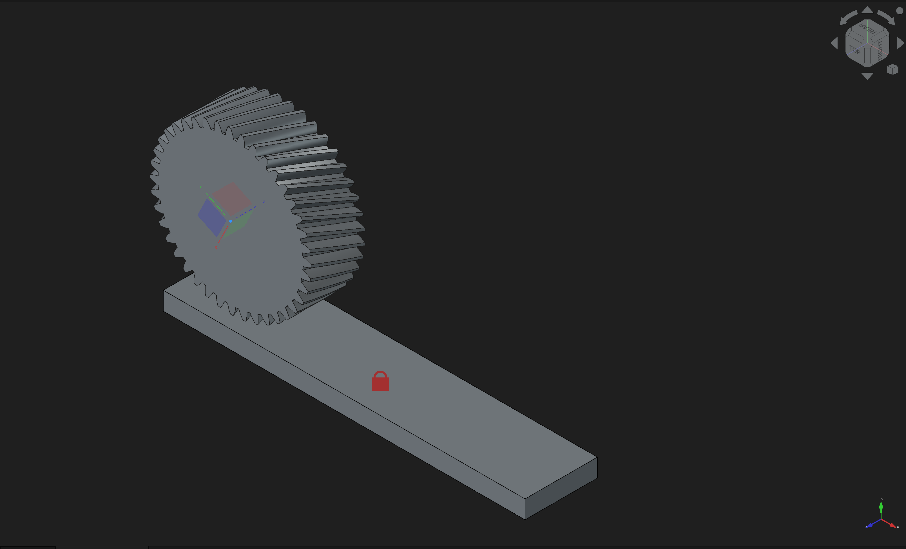
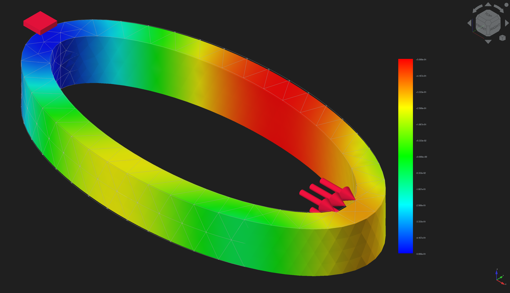
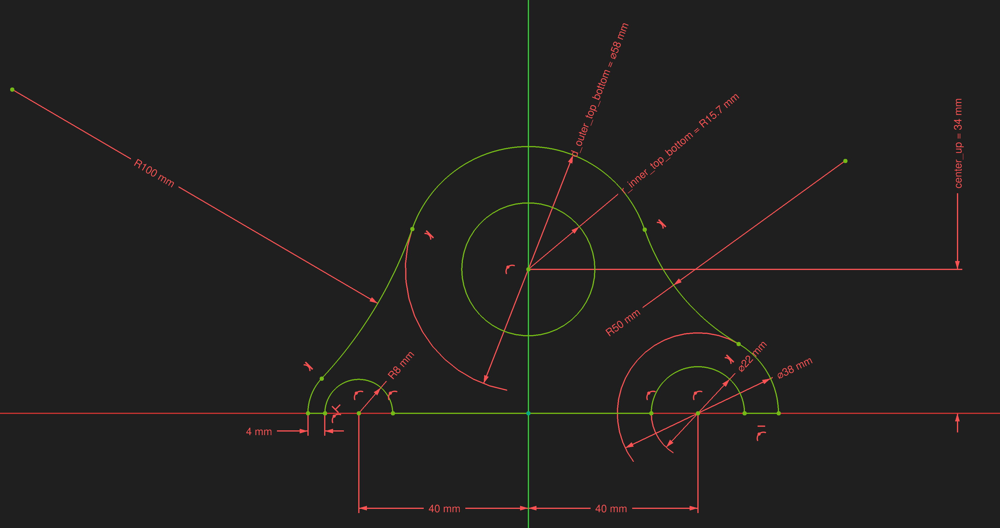

Set the task
Instructions, reference images, and a reproducible initial workspace.
TASK PACKAGE
A benchmark for long-horizon CAD workflows.
Real software. Precise requirements. Saved artifacts you can inspect.



Reference task assets from CADWorld · Not agent-generated results
Construct a feature. Connect an assembly. Generate a toolpath. Each task asks an agent to leave behind a specific engineering result.

Recreate the reference sketch as a fully constrained profile in the XY plane, using tangent arcs and circles tied together with coincidence and horizontal/vertical constraints.
A fully constrained FreeCAD sketch matching the reference image.
Line, arc, and circle entities with dimension, tangent, coincidence, and horizontal/vertical constraints.
Sketch 63· Part 77· Assembly 25· CAM 15· FEM 3· Appearance 3· Point cloud 3· Macro 3· Measurement 3· Mesh 3· TechDraw 2
Reference targets and real FreeCAD trajectory screenshots, spanning every workflow category in the benchmark.
A screenshot captures appearance. CADWorld applies task-specific executable checks to the engineering state saved after an agent finishes.
Instructions, reference images, and a reproducible initial workspace.
The published main setting uses screenshots and GUI actions.
Collect the native project and any task-specific auxiliary outputs.
Score the required properties and record diagnostic evidence.
Requirements are task-specific. Geometric checks, feature structure, constraints, CAM outputs, and FEM results vary by task. A pass means the implemented checks passed; it is not a general certification of engineering fitness.
The paper’s main benchmark uses screenshot-based GUI interaction. Its terminal-only experiment is a separate 50-task ablation and is not pooled into the main results.
For this draft: the precise submission policy for hybrid harnesses is pending author confirmation. Report the agent interface, allowed tools, budget, and benchmark version with every result.
See the paper’s evaluation setup ↗The strongest evaluated agent passes 17.5% of the full benchmark under the reported setup. Explore how performance changes across workflows.
| AGENT | TASK SUCCESS | RATE |
|---|
Bar scale: 0–100% · Model names follow the published report.
These are the authors’ reported results, not a live leaderboard. Scores depend on the agent, harness, environment, and evaluation rules. Small workflow groups should be interpreted with their sample sizes.
Bring your computer-use agent to the FreeCAD environment. Check the setup first, then move to a complete benchmark run.
Computer-Use Benchmark for Long-Horizon Computer-Aided Design
¹ Georgia Institute of Technology² North Carolina State University³ Marquette University⁴ Saros Lab⁵ CAMEL-AI & Eigent.AI⁶ National University of Singapore
Paper on arXiv ↗@misc{dong2026cadworld,
title={CADWorld: Computer-Use Benchmark for Long-Horizon Computer-Aided Design},
author={Zihan Dong and Yuanzhe Liu and Zhiyuan Ma and Qishi Zhan and Dehan Kong and Guohao Li and Kaixin Li},
year={2026},
eprint={2609.16251},
archivePrefix={arXiv},
primaryClass={cs.AI},
url={https://arxiv.org/abs/2609.16251}
}